FoodLuck MEO 操作説明書 06
投稿
Google・Yahoo!・SNSへ店舗のお知らせを出し、来店前のお客様へ今の情報を届けるための現場運用マニュアル
| この資料の目的 投稿は、Google検索やGoogleマップ上でお店が今も動いていることを伝える機能です。新メニュー、営業時間変更、イベント、キャンペーン、季節のお知らせを出す時に使います。即時投稿、予約投稿、SNS同時投稿、AI文章作成、エラー確認まで、現場で迷いやすい点をまとめています。 |
|---|
1. 投稿管理でできること
投稿一覧では、過去に実施した投稿、予約中の投稿、エラー投稿、下書きを確認できます。まず投稿一覧で状態を確認し、新しいお知らせを出す時は右上の新規投稿から作成します。
| 画面・機能 | 使う場面 | 店舗側で見ること | 注意点 |
|---|---|---|---|
| 投稿一覧 | 投稿履歴、予約、エラーを確認する | 投稿済み、投稿待ち、予約中、下書き、エラー | 反映状況はGoogle側処理待ちになる場合がある |
| 新規投稿 | お知らせを作成する | 投稿種類、媒体、タイトル、本文、日時、画像 | 登録後は外部に表示される可能性がある |
| 予約投稿 | 指定日時に投稿する | 予約日時、承認期限、予約一覧 | 当日や深夜時間帯には制限がある |
| AI支援 | 本文、画像、翻訳、ハッシュタグを作る | 生成後の内容が店舗らしいか | AI文は必ず人が確認・修正する |
| 一括投稿 | 複数店舗へ投稿する | 対象店舗、媒体、Excel内容 | FoodLuck側と確認して進める |
管理画面: 投稿一覧の見方

- 投稿一覧では、状態切替タブで投稿済み、投稿待ち、予約中、エラー投稿、下書きを確認します。
- 右上の新規投稿から、GoogleやYahoo!、SNS向けのお知らせを作成します。
- 配布用資料のため、店舗名と投稿履歴は伏せています。
2. 投稿前に決めること
投稿は、思いついた文章をそのまま出すよりも、誰に何をしてほしいかを決めてから作ると効果が出やすくなります。飲食店では、週1回以上を目安に、今食べられる商品、季節メニュー、限定数、予約導線、営業時間変更などを伝えます。
| 決めること | 飲食店での例 | 注意 |
|---|---|---|
| 投稿の目的 | 予約してほしい、来店してほしい、イベントを知ってほしい | 目的が曖昧だと本文もぼやける |
| 投稿種類 | 最新情報、特典、イベント | 開催期間があるものはイベントが向く |
| 最初の80から100文字 | 本日限定、季節メニュー、営業時間変更など | スマホでは冒頭だけ見られることが多い |
| ボタン | 予約する、詳細、購入、電話など | 本文中に電話番号やURLを多用しない |
| 画像 | 料理、外観、イベントバナー | 1投稿につき画像は1枚まで |
| 投稿で意識すること FAQでは、最低週1回の投稿、冒頭で価値を伝えること、CTAボタンを設置することが案内されています。本文内の電話番号や直接URL、過剰な記号、最上級表現、報酬条件つきのクチコミ誘導は、投稿拒否の原因になる場合があります。 |
|---|
| 投稿用画像の規定 画像はJPGまたはPNG、10KBから5MB、推奨解像度は720px x 720pxです。1投稿で登録できる画像は1枚です。複数画像を使いたい場合は、投稿を分けて作成します。 |
|---|
3. 新規投稿の基本手順
管理画面: 新規投稿の入力画面

- 投稿種類、媒体、タイトル、日時設定を上から順番に確認します。
- Google繰り返し設定を使う場合、Google以外の媒体への投稿やワークフロー機能は利用できません。
- 左メニューからGoogleデータ連携、Googleビジネスプロフィール、投稿を開きます。
- 右上の新規投稿をクリックします。
- 投稿種類を選びます。通常のお知らせは最新情報、期間限定はイベント、クーポンや特典は特典を選びます。
- 投稿する媒体を選びます。Yahoo!やSNSへ同時投稿する場合は媒体ごとの制限も確認します。
- タイトル、本文、画像、ボタン、ハッシュタグを入力します。
- 即時投稿、予約投稿、繰り返し投稿のどれにするかを選びます。
- 右側のプレビューを確認し、問題なければ登録します。
- 投稿後は投稿一覧でステータスを確認します。
FAQ画像: 投稿画面で入力内容を確認する
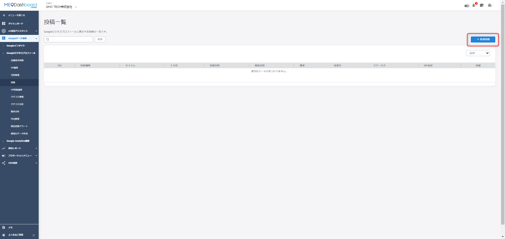
- 投稿日時、投稿内容、画像、ボタン、ハッシュタグ、ワークフロー申請を確認します。
- 登録前に右側の表示イメージを見て、店舗名、日付、本文の誤字を確認します。
FAQ画像: 投稿画像を設定する
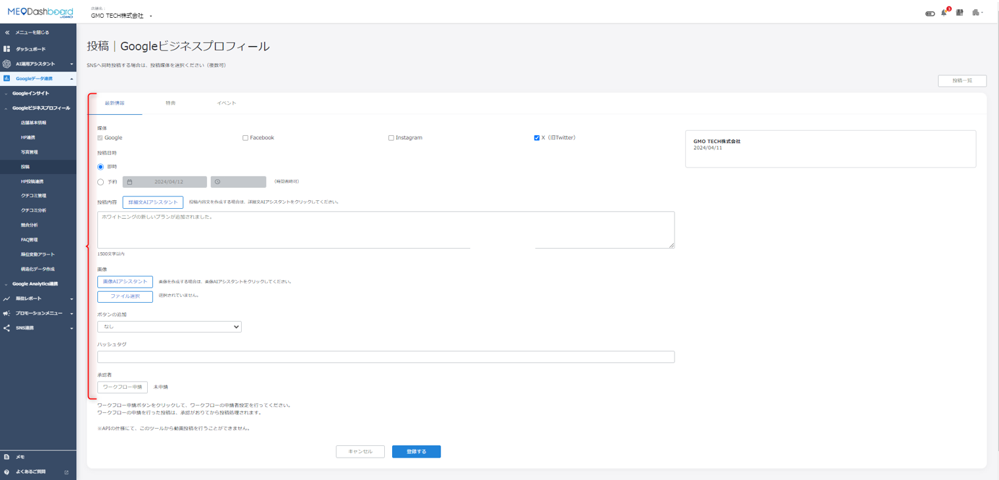
- 画像はイベントバナーや料理写真など、投稿内容と一致するものを選びます。
- 画像がない場合は画像AIアシスタントの利用もできますが、実店舗の写真がある場合は実写真を優先します。
4. 投稿種類と表示される場所
| 投稿種類 | 使いどころ | 飲食店での例 |
|---|---|---|
| 最新情報 | もっとも基本のお知らせ | 新メニュー、営業時間変更、ランチ案内、臨時休業 |
| 特典 | クーポンや特典を伝える | 期間限定割引、来店特典、クーポンコード |
| イベント | 開催期間がある案内 | 周年祭、フェア、限定コース、店内イベント |
| 商品投稿 | Dashboardからは行えない案内あり | 必要な場合はGoogleビジネスプロフィール側やFoodLuckへ相談 |
FAQ画像: 投稿種類の表示イメージ
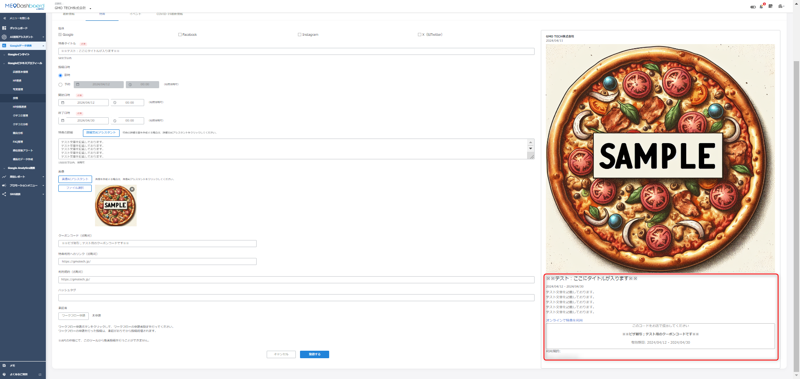
- 最新情報、特典、イベントは入力項目や表示される情報が異なります。
- 期間が決まっている案内はイベントを使うと、期間終了後に表示が整理されやすくなります。
FAQ画像: 投稿がGoogle上に表示される場所
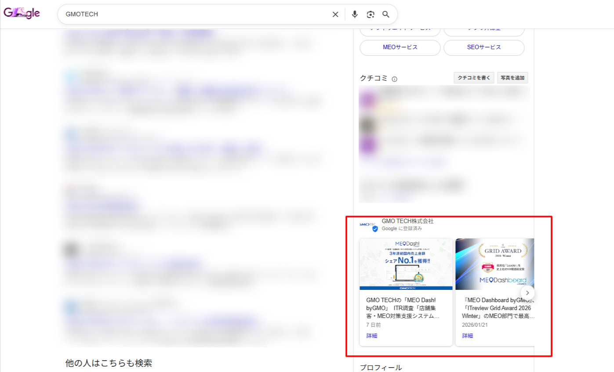
- 投稿はGoogle検索やGoogleマップの最新情報、オーナー提供の表示に出ます。
- お客様が店舗詳細を見た時に、今のお知らせとして確認されます。
5. 予約投稿・繰り返し投稿・ステータス確認
投稿は即時だけでなく、予約投稿や繰り返し投稿もできます。事前に予定が決まっているキャンペーン、季節メニュー、イベント告知は予約投稿が便利です。
FAQ画像: 繰り返し投稿の設定
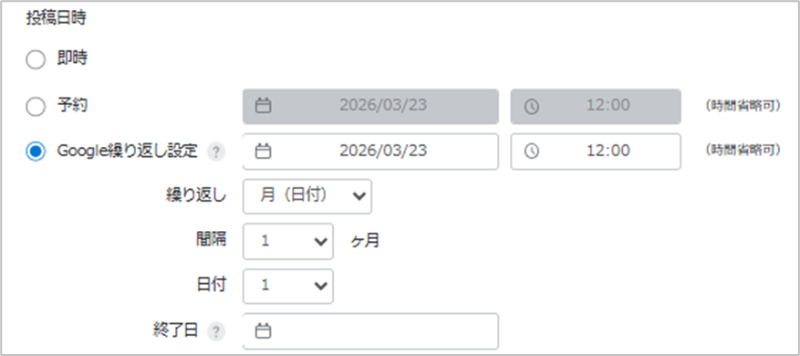
- 繰り返し投稿はGoogleのみで利用できます。
- 週単位、月単位などの条件を設定します。ワークフロー申請は利用できない案内があります。
FAQ画像: 投稿ステータスの一覧
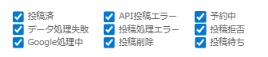
- 投稿済、Google処理中、投稿待ち、予約中、API投稿エラー、投稿拒否などの状態を確認します。
- Google処理中はGoogle側の確認待ちで、FoodLuck MEO側ではすぐ対応できない場合があります。
- 予約投稿は翌日以降の設定が基本です。当日投稿は即時投稿で対応します。
- 当日予約をする場合、現在時刻から3時間以上先の時間を設定する案内があります。
- 予約した投稿は、予約時間の約1時間前まで修正・削除可能です。
- 予約投稿をワークフロー申請する場合、投稿予定日の前日23時までに承認が必要です。
- 23時30分から23時59分の間に翌日分の予約を入れるとエラーになる場合があります。
6. AI機能を使って投稿を作る
投稿には、詳細文AIアシスタント、画像AIアシスタント、AI翻訳、ハッシュタグAI生成、画像トリミングとテキスト追加があります。AIは作業を早くする道具ですが、飲食店らしさ、誤字、価格、日付、料理名は必ず人が確認します。
FAQ画像: 詳細文AIアシスタント
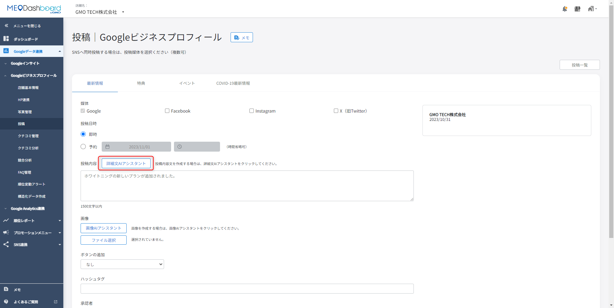
- 文字数と、お知らせで伝えたいポイントを入力して文章候補を作成します。
- 生成された3候補から近いものを選び、店舗の言葉に修正します。
FAQ画像: 画像AIアシスタント
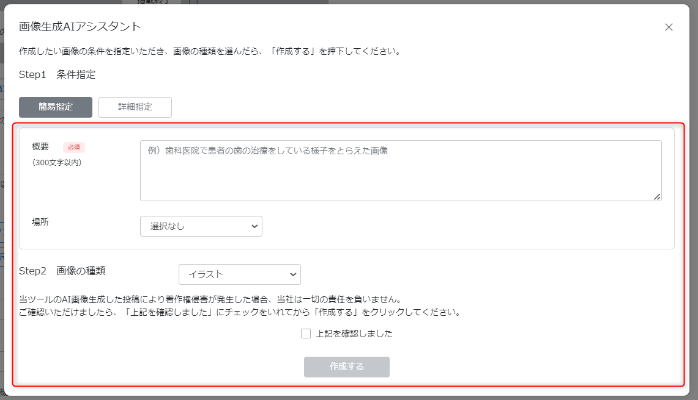
- 画像がない場合、投稿用画像をAIで生成できます。
- 著作権確認にチェックし、候補画像を選びます。実店舗写真がある場合は実写真を優先します。
FAQ画像: 投稿画像のトリミングとテキスト追加
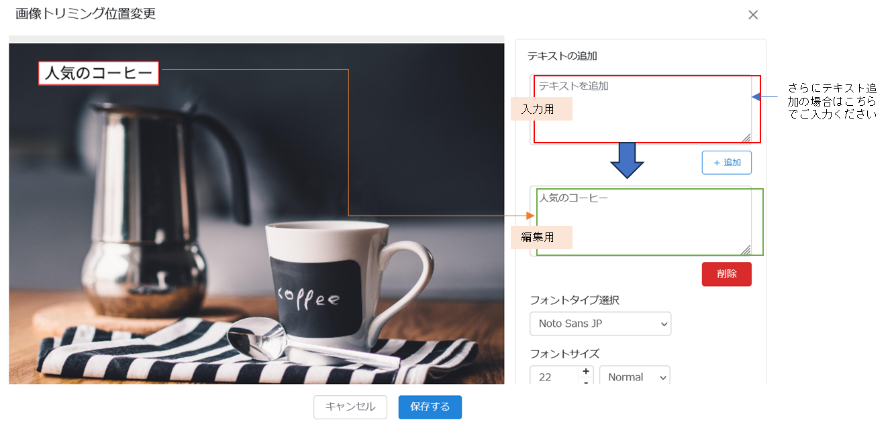
- 画像の比率を整えたり、画像上に短いテキストを追加できます。
- 1テキストは50文字までの案内があります。小さすぎる文字や読みにくい色は避けます。
FAQ画像: AI翻訳機能
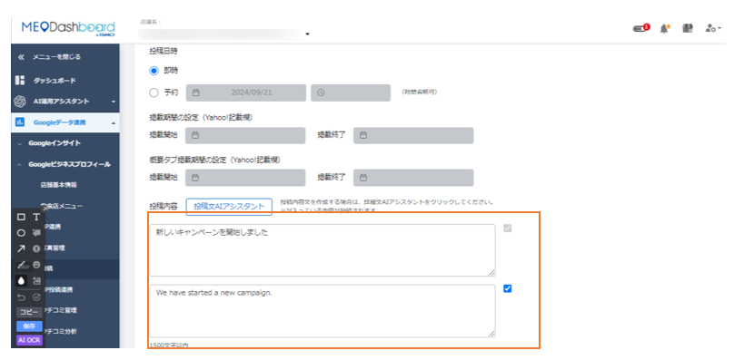
- インバウンド向けに翻訳投稿を作成できます。
- 原文と翻訳文を含めて1,500文字以内に収めます。料理名や店名は人の目で確認します。
FAQ画像: ハッシュタグAI生成
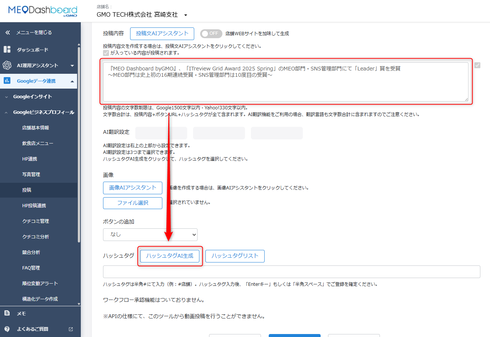
- 投稿内容から候補を生成し、最大10個まで選択できます。
- ハッシュタグも文字数制限に含まれます。Googleは1,500文字以内、Yahoo!は330文字以内を意識します。
7. Yahoo!・SNS・RSS・ボタンURLの注意
GoogleだけでなくYahoo!、Facebook、Instagram、Xなどへ同時投稿する場合、媒体ごとのルールに合わせる必要があります。特にYahoo!は文字数、タイトル、掲載期間の条件でエラーが出やすいので注意します。
| 項目 | 確認すること | 注意 |
|---|---|---|
| Yahoo!同時投稿 | タイトル、本文、ボタンURLの合計文字数 | 合計330文字以内、タイトル50文字以内かつ必須 |
| Yahoo!掲載期間 | 開始と終了を両方入れるか、両方空欄にする | 片方だけ入力するとエラーになる |
| SNS連携 | SNSアカウントの連携状態と投稿内容 | 電話番号や画像内電話番号があるとGBP反映されない場合がある |
| 重複投稿 | 同じ内容が既にGBPにないか | 同一内容はスキップされ、一覧にも出ない場合がある |
| RSSブログ | RSSフィード、取得件数、開始日、OGP画像 | 自動反映設定はFoodLuck側と確認 |
| ボタンURL | 予約、詳細、注文などのリンク候補 | 事前設定は最大10個、URLはカンマ区切りの案内あり |
FAQ画像: Yahoo!掲載期間エラー
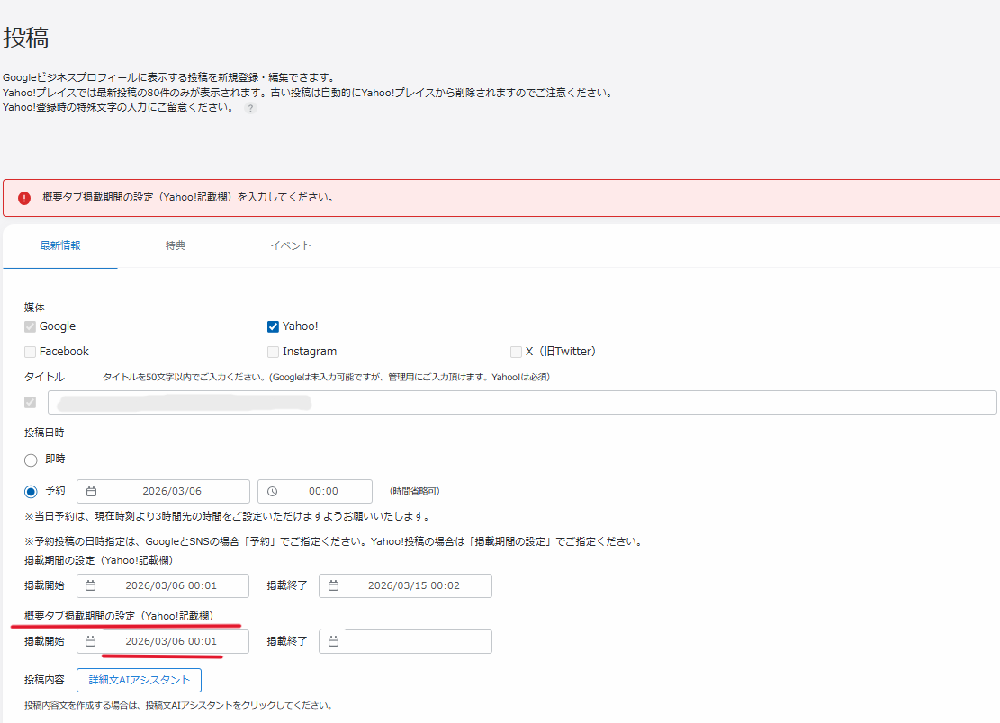
- 掲載開始と掲載終了は、両方空欄または両方入力にします。
- 片方だけ入力すると必須設定エラーになる案内があります。
FAQ画像: RSSブログ連携
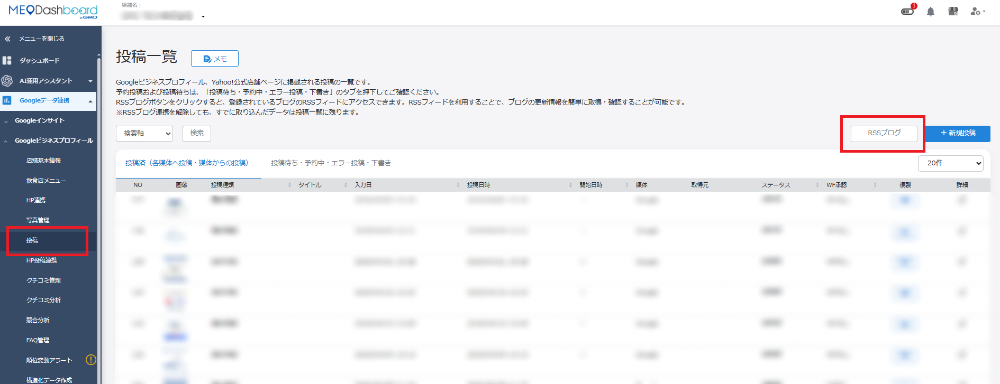
- ブログやオウンドメディアのRSSフィードをGoogle、Yahoo!投稿へ自動反映する機能です。
- 取得件数、取得開始日、OGP画像の扱いを確認します。設定はFoodLuck側と確認して進めます。
FAQ画像: ボタンURLの事前設定
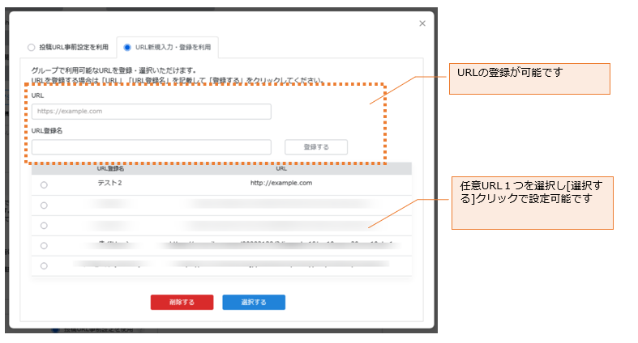
- 予約ページやメニューページなど、よく使うURLを候補として登録できます。
- 店舗ごとにURLが異なる場合、誤った店舗のURLを使わないよう確認します。
8. グループ・Excelで一括投稿する
複数店舗へまとめて投稿する場合は、グループ管理画面やExcel一括投稿を使えます。店舗ごとに内容やURLが異なる場合は、Excelテンプレートを使う方法があります。対象店舗や媒体を間違えると複数店舗へ影響するため、FoodLuck側で確認して進めます。
FAQ画像: グループ管理画面からの一括投稿
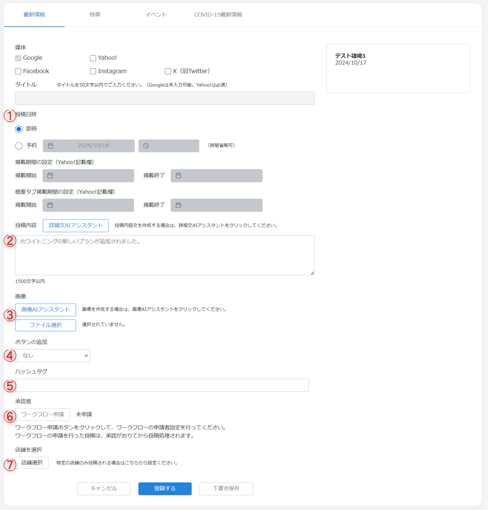
- グループ画面から新規投稿を開き、媒体、投稿種類、本文、画像、ボタン、店舗選択を設定します。
- 下書き保存の場合は即時・予約・ワークフロー申請を含め、情報は反映されません。
FAQ画像: Excel一括投稿テンプレート
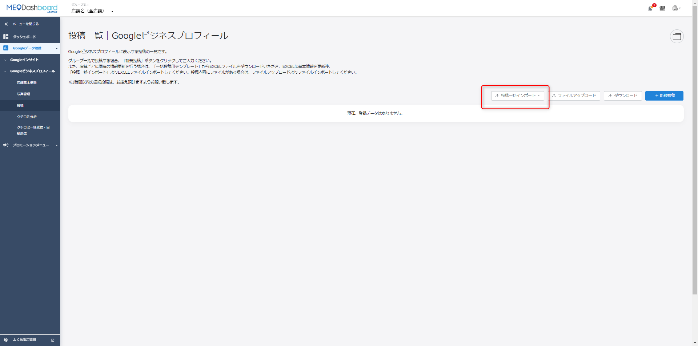
- 店舗ID、店舗名、投稿タイプ、下書き保存、即時投稿、予約日、予約時間などを入力します。
- 即時投稿に丸が入っている場合、予約日時が入っていても即時投稿扱いになる案内があります。
| 一括投稿はFoodLuck側で確認 Excel一括投稿では、画像は事前にファイルアップロードし、画像ライブラリから指定する流れがあります。店舗ID、URL、日時、媒体、下書き保存、即時投稿の入力ミスは反映先の誤りにつながるため、店舗側だけで進めず確認してください。 |
|---|
9. 投稿エラー・投稿拒否への対応
投稿が反映されない時は、まず投稿一覧のステータスとエラー内容を確認します。Google側の審査や媒体ごとの制限によるものもあるため、同じ操作を繰り返す前に原因を切り分けます。
| 症状 | 主な原因 | 対応 |
|---|---|---|
| 1,500文字エラー | Google投稿の文字数上限超過 | 本文、翻訳、ハッシュタグを含めて短くする |
| Yahoo!同時投稿エラー | 330文字超過、タイトル未入力、掲載期間不足、画像サイズ不足 | タイトル50文字以内、合計330文字以内、画像720px以上を確認 |
| Yahoo!掲載期間エラー | 開始または終了の片方だけ入力 | 両方空欄、または両方入力にする |
| 予約投稿エラー | 23時30分から23時59分に翌日予約を設定 | その時間帯を避けて設定する |
| 投稿拒否 | 過剰な記号、URL、電話番号、NG表現、報酬条件つき誘導など | 本文を修正し、ボタンURLへ分けて再投稿する |
| SNS投稿がGBPに反映されない | 電話番号投稿の除外、画像内電話番号、重複投稿スキップ | 文章と画像を見直し、同一内容なら一部変更する |
| 商品投稿が見えない | カテゴリによりGoogle側が制限 | 不具合ではない場合がある。必要時はFoodLuckへ相談 |
FAQ画像: GoogleとYahoo!同時投稿のエラー確認
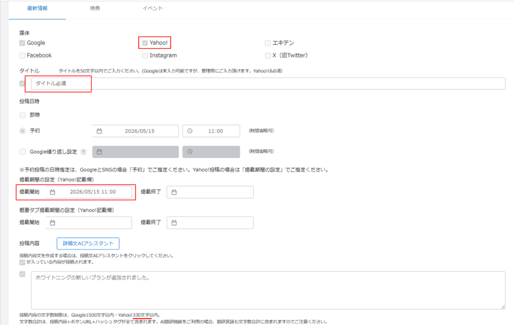
- Yahoo!は文字数、タイトル、掲載期間、画像サイズの条件を満たす必要があります。
- Googleでは問題なくても、Yahoo!側の条件で同時投稿が止まる場合があります。
| 投稿拒否時の基本対応 まず過剰な記号、本文内URL、電話番号、根拠のない最上級表現、報酬条件つきのクチコミ誘導を外します。同じ内容を繰り返し送るのではなく、原因を直してから再投稿してください。 |
|---|
10. 投稿前チェックリスト
□ 開いている店舗と投稿する媒体を確認した
□ 最新情報、特典、イベントのどれで出すか決めた
□ 冒頭80から100文字で伝えたい内容が分かる
□ 日付、曜日、価格、限定数、営業時間に誤りがない
□ 画像は1枚で、投稿内容と合っている
□ 本文内に電話番号や長いURLを直接入れすぎていない
□ 予約投稿の場合、予約日時と承認期限を確認した
□ Yahoo!へ投稿する場合、タイトル50文字以内、合計330文字以内、掲載期間を確認した
□ AI生成文、翻訳文、画像AIの内容を人の目で確認した
□ 登録前に右側のプレビューを確認した
□ 投稿後に投稿一覧でステータスを確認した
11. この資料に反映したFAQ記事
このカテゴリの下層FAQ記事33件を確認し、投稿の操作方法として本文へ反映しています。日常投稿、予約、AI支援、媒体連携、一括投稿、エラー対応を分けて整理しています。
| FAQ記事 | 反映した章 | 店舗向けの扱い |
|---|---|---|
| AI翻訳機能_投稿 | AI支援・画像編集 | 店舗側が日常的に確認・利用する項目 |
| Excelを使用し投稿する方法 | グループ・一括投稿 | FoodLuck側と確認して進める項目 |
| GoogleとYahoo!の同時投稿がうまくいかない場合 | 媒体連携・URL・RSS | 店舗側が日常的に確認・利用する項目 |
| Googleビジネスプロフィールの「商品投稿」項目が表示されない理由 | エラー対応・制限 | 店舗側で確認し、必要に応じてFoodLuckへ相談 |
| Google投稿が投稿拒否になった原因と対処方法 | エラー対応・制限 | 店舗側で確認し、必要に応じてFoodLuckへ相談 |
| Google投稿で意識したいポイント | 投稿運用 | 店舗側が日常的に確認・利用する項目 |
| Google投稿時のエラー「Must be at most 1500 characters」の解消方法 | エラー対応・制限 | 店舗側で確認し、必要に応じてFoodLuckへ相談 |
| MEO Dashboard上からの商品投稿について | エラー対応・制限 | 店舗側で確認し、必要に応じてFoodLuckへ相談 |
| RSSブログ連携について | 媒体連携・URL・RSS | FoodLuck側と確認して進める項目 |
| SNS投稿がGBPに反映されない原因と対処法 | 媒体連携・URL・RSS | 店舗側で確認し、必要に応じてFoodLuckへ相談 |
| Yahoo!投稿時の「掲載期間設定」エラーの解消方法 | 媒体連携・URL・RSS | 店舗側で確認し、必要に応じてFoodLuckへ相談 |
| グループ管理画面からの一括投稿について | グループ・一括投稿 | FoodLuck側と確認して進める項目 |
| ハッシュタグAI生成機能について | AI支援・画像編集 | 店舗側が日常的に確認・利用する項目 |
| ハッシュタグリスト機能について | AI支援・画像編集 | 店舗側が日常的に確認・利用する項目 |
| ボタン追加 URL事前設定機能 | 媒体連携・URL・RSS | FoodLuck側と確認して進める項目 |
| 予約投稿でエラーが表示される際の対処法 | 予約・繰り返し・状態確認 | 店舗側で確認し、必要に応じてFoodLuckへ相談 |
| 予約投稿の設定方法 | 予約・繰り返し・状態確認 | 店舗側が日常的に確認・利用する項目 |
| 実施した投稿の反映箇所 | 基本投稿・表示 | 店舗側が日常的に確認・利用する項目 |
| 承認期限を超えた予約投稿の承認 | 予約・繰り返し・状態確認 | 店舗側が日常的に確認・利用する項目 |
| 投稿の予約可能件数について | 予約・繰り返し・状態確認 | 店舗側が日常的に確認・利用する項目 |
| 投稿の方法 | 基本投稿・表示 | 店舗側が日常的に確認・利用する項目 |
| 投稿の種類 | 基本投稿・表示 | 店舗側が日常的に確認・利用する項目 |
| 投稿の複製（個店） | 投稿運用 | 店舗側が日常的に確認・利用する項目 |
| 投稿後のステータスについて | 予約・繰り返し・状態確認 | 店舗側が日常的に確認・利用する項目 |
| 投稿時の複数画像投稿について | 基本投稿・表示 | 店舗側が日常的に確認・利用する項目 |
| 投稿機能のイベントについて | 基本投稿・表示 | 店舗側が日常的に確認・利用する項目 |
| 投稿用画像の規定 | 基本投稿・表示 | 店舗側が日常的に確認・利用する項目 |
| 投稿画像のトリミングとテキスト追加 | AI支援・画像編集 | 店舗側が日常的に確認・利用する項目 |
| 画像AIアシスタント機能の使用方法 | AI支援・画像編集 | 店舗側が日常的に確認・利用する項目 |
| 繰り返し投稿方法 | 予約・繰り返し・状態確認 | 店舗側が日常的に確認・利用する項目 |
| 詳細文AIアシスタントの活用ポイント | AI支援・画像編集 | 店舗側が日常的に確認・利用する項目 |
| 詳細文AIアシスタント機能の使用方法 | AI支援・画像編集 | 店舗側が日常的に確認・利用する項目 |
| 重複投稿のスキップ仕様について | 媒体連携・URL・RSS | 店舗側が日常的に確認・利用する項目 |